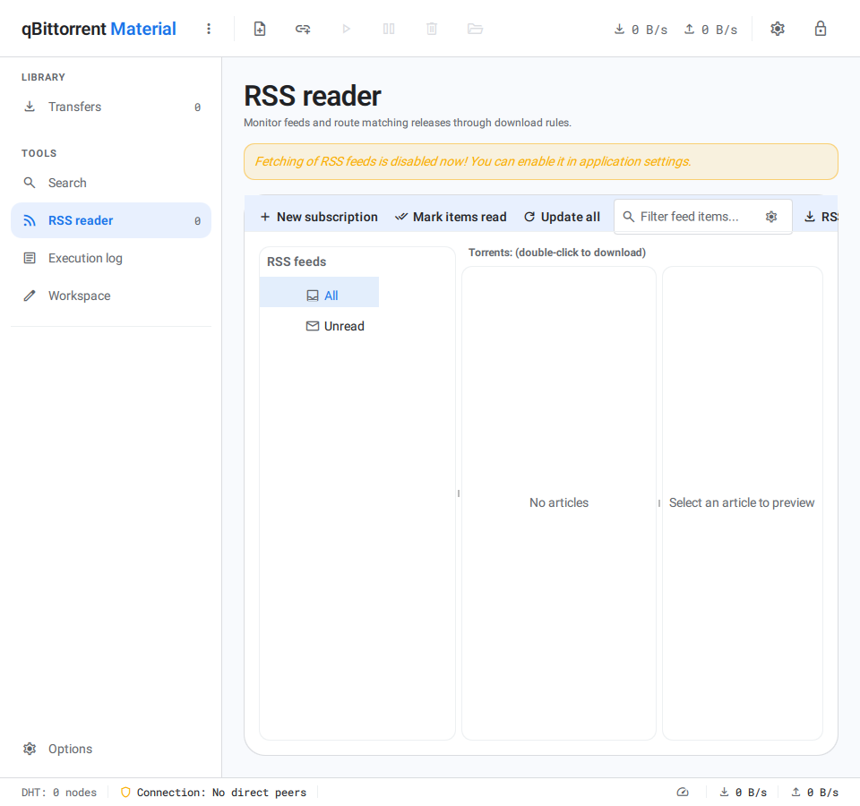
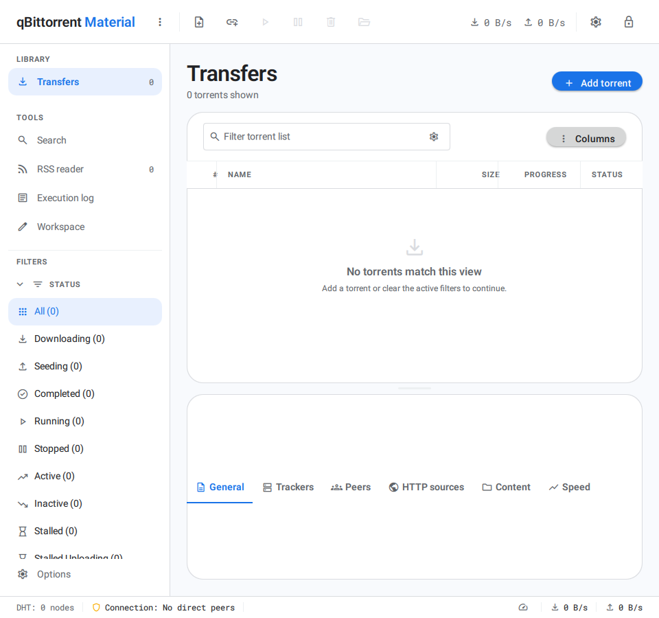
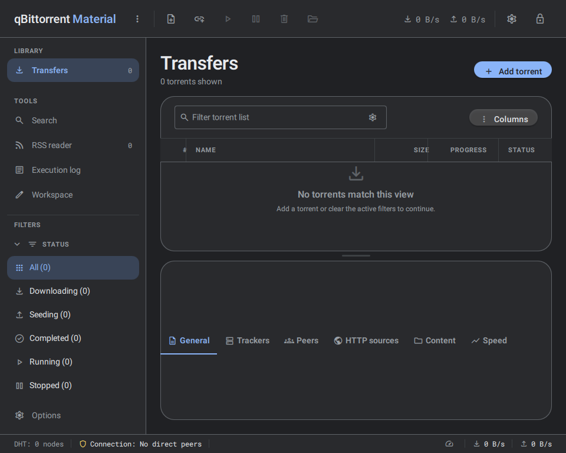
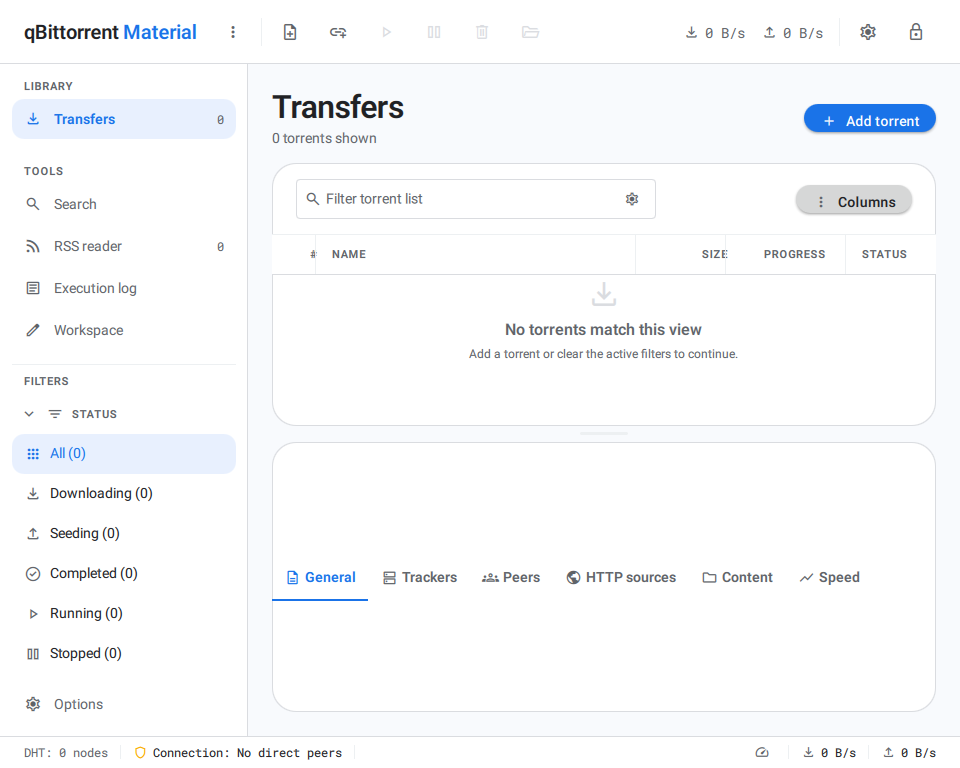

Focused workspaces
Every operational surface, one destination away.
Transfers, Search, RSS, Execution Log, and the personal Workspace share the same persistent 248px navigation and stable application chrome.

A compact native qBittorrent desktop rewrite with a 64px command bar, persistent workspace navigation, keyboard-safe controls, and cool-neutral System, Light, and Dark themes.

The power of qBittorrent stays close at hand while hierarchy, color, motion, and spacing make every task easier to read.
Transfers, Search, RSS, Execution Log, and the personal Workspace share the same persistent 248px navigation and stable application chrome.

Create browser-style plain-text pages, give every tab its own font and unrestricted color, rename the app display, and let bundled local Git remember each change. Move a compact JSON snapshot or the complete repository whenever you need.
See transfer states, categories, tags, and trackers at a glance.
System, Light, and Dark themes use semantic color throughout.
C++ and Qt keep interaction immediate without a browser shell.
Progress, peers, speed, ETA, and ratios remain readable at a glance.
Inspect general data, trackers, peers, HTTP sources, content, and speed without losing context.

The native shell uses a 64px command bar, 248px navigation, 24px gutters and panel corners, 40px controls, and a 32px status footer. The hierarchy stays consistent from the supported 960px compact window through wide desktop displays.

Every push builds the Windows application, packages it with NSIS, smoke-tests the installed executable, and publishes the installer directly on GitHub Releases.
Search every guide, including the complete custom Workspace Tabs reference, without leaving this page. Use plain text, precise regular expressions, and field filters.
Browse the navigation or search the complete local documentation set. Pages are rendered here with headings, code, tables, links, and a generated outline.
Open any view for a closer look at the installed application. Every image is captured from the real native build.
The foundation is in place. The roadmap keeps refinement, platform reach, and community feedback moving forward.
Shared command bar, navigation, status footer, Transfers, Search, RSS, Execution Log, Workspace, Options, and repeatable releases.
Close remaining interaction gaps while refining motion, accessibility, and platform integration.
Package and validate the native experience across additional desktop environments.
No. The application is built natively in C++ with Qt and uses the real qBittorrent engine contracts.
Every successful push publishes a versioned Windows installer directly to GitHub Releases.
GitHub Actions builds the app, creates an NSIS package, installs it silently, launches and verifies the executable, then performs a clean uninstall.
It is a distinct Material-oriented desktop project built around qBittorrent behavior and concepts. Review the current feature specification before relying on it as a daily-driver replacement.
Yes. The entire wiki index and search engine run locally in your browser with no external service or JavaScript dependency.
No separate installation is required. Bundled libgit2 saves each persistent page and its appearance to a managed local repository, with JSON and complete-repository export options.
Start with the building and architecture pages in the wiki, then open an issue or pull request on GitHub.
Use the released installer, inspect the source, or help close the next behavior gap.